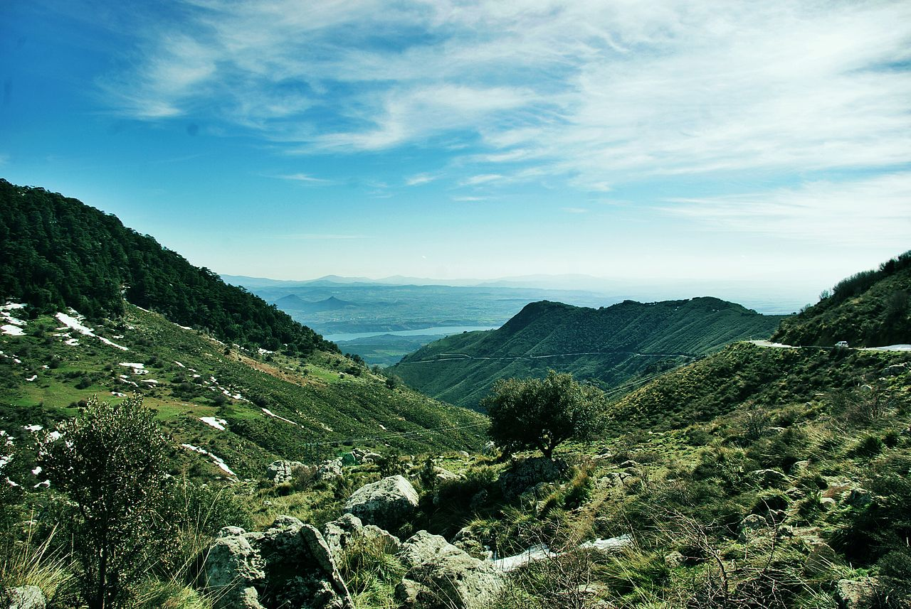
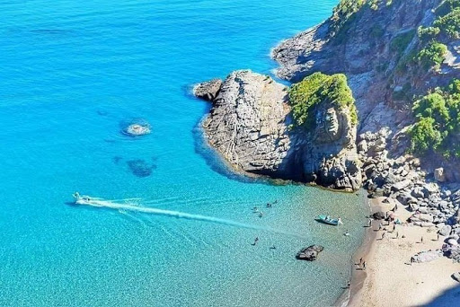

Home
Application des Parcs Nationaux en Algérie.
Faite par : Selmane Ishak,
E-mail : isacselmane@gmail.com,
BaseMaps
Overly
Liste
Parc National d'El Kala
Wilaya d'El Tarf.
Parc National de Belezma
Wilaya de Batna.
Parc National de Chréa
Wilaya de Blida.Parc National de Djebal Aissa
Wilaya de Nâama.
Parc National de Gouraya
Wilaya de Béjaia.Parc National de Tassili
Wilaya d'Illizi.
Parc National de Taza
Wilaya de Jijel.Parc National de Tlemcen
Wilaya de Tlemcen.Parc National du Djurdjura
Wilaya de Tizi Ouzou. Réserve naturelle de Beni Belaid
Wilayade Jijel. Info
Présentation du parc
Le parc national de Djebel Aissa (en arabe :الحظيرة الوطنية لجبل عيسى) est un parc national de l’Atlas saharien situé à l'ouest de l'Algérie, dans la wilaya de Naâma. Il a été créé en 2003 et s’étend sur 24 400 hectares. Le parc en question revêt une importance particulière dans la préservation de l’écosystème de la région des Hauts-Plateaux de l’ouest, menacée par les phénomènes de désertification et d’ensablement.
Le Parc national de Tlemcen (en arabe : الحديقة الوطنية تلمسان), est un parc national algérien, situé dans la wilaya de Tlemcen, au nord-ouest de l'Algérie. C'est l'un des plus récents parcs nationaux d'Algérie. En plus des forêts d'Ifri, de Zariffet et d'Ain Fezza, et des Cascades d'El-Ourit et falaises d'El-Ourit, il abrite d'importants sites archéologiques et spéléologiques, ainsi que les ruines de Mansourah et la mosquée de Sidi Boumediene. En 2016, les monts de Tlemcen ainsi que le parc sont reconnus réserve de biosphère par l'Unesco.
Le parc national de Taza (en arabe : الحظيرة الوطنية لتازة), est un parc national algérien, situé dans la wilaya de Jijel, au Nord de l'Algérie, au bord de la méditerranée. Connu surtout pour ses grottes, il abrite de vastes plages de sable ainsi que des gouffres et des falaises. Le parc a été reconnu réserve de biosphère par l'UNESCO en 2004.
Le parc national d’El-Kala (en arabe : الحديقة الوطنية القالة), est un parc national algérien, situé près de la ville d'El Kala dans la wilaya d'El-Tarf, au nord-est de l'Algérie. Créé en 1983, avec une superficie de 80 000 ha, il est bordé au nord par la mer Méditerranée et à l'est par la frontière tunisienne. Il abrite de nombreux lacs et un écosystème unique dans le bassin méditerranéen. Le parc a été classé réserve de biosphère par l'UNESCO en 19901. En avril 2008, le parc est menacé par le tracé de l'autoroute Est-Ouest reliant la frontière tunisienne à la frontière marocaine qui prévoit de le traverser de part en part. Si elle venait à se réaliser, cette infrastructure aurait des conséquences désastreuses et irréversibles pour cet écosystème. Diverses actions sont entreprises pour détourner l'autoroute sur une variante de tracé contournant le parc plus au sud
Le parc national de Belezma (en arabe : الحظيرة الوطنية بلزمة) est un parc national algérien, situé dans la wilaya de Batna, au nord-est de l'Algérie. Le mont Belezma, est un imposant massif au relief tourmenté, avec des vallées très étroites et des pics culminants jusqu’à 2 136 m (djebel Tichaou) et 2 178 m (djebel Refaâ), constitue le début de la chaîne des Aurès. Le parc national de Belezma fut créé par le décret présidentiel no 84/326 du 3 novembre 1984, au même moment que les deux parcs nationaux de Gouraya et Taza1. Sa classification a été motivée par la présence de grandes étendues de cèdres de l’Atlas dans une zone de grandes influences sahariennes et méditerranéennes, la présence d’un patrimoine archéologique et historique d’une valeur inestimable et une mosaïque de zones humides au nord-nord-est. Le parc national de Belezma se situe sur la partie orientale de l’Algérie du Nord, il correspond à un chaînon montagneux marquant le début du massif des Aurès. Il s’étend sur une superficie de 26 250 hectares et représente un territoire de configuration allongé, étiré d’orientation sud-ouest /nord–est à proximité de la ville de Batna. Le parc a été reconnu réserve de biosphère par l'Unesco en juin 2015 sur une surface de 262,50 km².
Le parc national de Chréa (en arabe : الحظيرة الوطنية الشريعة), est un parc national d'Algérie situé à 50 km au sud d'Alger dans la wilaya de Blida. C'est essentiellement un parc montagneux, situé en plein cœur du massif blidéen (partie de l'Atlas tellien). Connu surtout pour sa station de ski à Chréa, il abrite aussi de vastes forêts de cèdres centenaires ainsi que les gorges de la Chiffa et le lac de Dhaya à Tamesguida. Le parc offre également la possibilité de faire des randonnées pédestres. Les cédraies sont le refuge d'une population de macaques berbères (Macaca sylvanus), espèce menacée. Le parc a été reconnu réserve de biosphère par l'UNESCO en 2002
Le parc national de Gouraya (en berbère : Urti Aɣelnaw n Guraya; en arabe : الحديقة الوطنية قورايا) est un parc national algérien, situé dans la wilaya de Béjaïa en Kabylie, au nord de l'Algérie et au bord de la méditerranée. Il accueille environ 1 200 000 visiteurs par an, surtout en période estivale. Ses plages de sables, ses falaises et ses eaux cristallines participent à son attrait. Le mont Gouraya avec ses 660 m domine le parc. La flore et la faune y sont variées dont le macaque berbère et le chacal doré qui vivent dans les forêts du parc. Le parc a été classé réserve de biosphère par l'UNESCO en 2004. Le parc est situé sur la côte orientale de la Kabylie dans la wilaya de Béjaia à 230 km d'Alger, cette situation met le parc en relation avec d'autres villes : à 111 km au nord-ouest de Sétif, à 127 km à l'est de Tizi Ouzou et à 96 km à l'ouest de Jijel. Ce parc a été créé pour les diversités en végétation endémique, et ses milieux marins et continentaux ainsi qu'à l'histoire régionale. Situé entièrement dans la commune de Béjaia, il occupe une superficie de 2080 ha, à laquelle s’ajoutent une zone marine de 7842 ha ainsi qu’une zone lacustre « le lac de Mézaia » d’une superficie de 3 ha. Il présente des richesses archéologiques notamment 15 sites historiques et 9 pittoresques.
Le parc culturel du Tassili (anciennement parc national du Tassili jusqu'à 2011), est un parc national algérien, situé près de la ville de Djanet, dans la wilaya de Illizi, dans le Sud de l'Algérie. Couvrant une superficie de 138 000 km2, il est le premier parc d'Algérie par la taille. Le parc englobe une grande partie du massif du Tassili n'Ajjer, l'Erg Admer et la Tadrart Rouge. L'occupation humaine de la région remonte à plus de 10 000 ans, lorsque des Néolithiques l'arpentaient pour chasser et pratiquer la cueillette. Il est classé depuis 1982 au patrimoine mondial et réserve de biosphère depuis 1986 par l'UNESCO. Il est, par le nombre de ses gravures rupestres, le premier site à l'échelle mondiale. Le parc abrite également la vallée d'Iherir, classée site Ramsar depuis le 2 février 2001.
Le parc national du Djurdjura (en berbère : Urti Aɣelnaw n Ǧerǧer; en arabe : الحديقة الوطنية جرجرة), est un parc national algérien, situé dans la wilaya de Bouira, en Kabylie, au Nord de l'Algérie. Le parc abrite de vastes forêts, des gorges et des gouffres, où vit une faune très riche. Le parc est également une réserve de biosphère reconnue par l'UNESCO depuis 1997.
La réserve Naturelle de Beni Belaid créée par arrêté de (c)nabile Wilaya N° 786/97 du 08/11/1997, fait partie de la zone humide du même nom et est située sur le littoral de la Commune de Kheiri Oued Adjoul , Daira d'El-Ancer . Elle est limitée : - Au Nord par la Mer Méditerranée - Au Sud par des terrains agricoles - A l'Ouest par l'Embouchure de l'Oued El Kebir . - A l'Est par des terrains incultes . A vol d'oiseau, elle se trouve à 30 Kms à l'Est de la Ville de Jijel. On y accède à partir de la Route Nationale 43, par la bifurcation donnant sur le CW 32 située à l'Ouest d'El-Ancer. La superficie totale de cette réserve est de 122 Ha qui englobe : - Un lac (10 Ha) - Des marécages (20 Ha) - Une peuleraie (37 Ha) - Des terrains sablonneux : Dunes et Plages (47 Ha) - Des terrains humides et broussailleux (08 Ha). L'écosystème de cette zone est formé par cinq types de milieux caractérisés notamment par un couvert végétal associé à une faune particulière .
tools
| Liste des Points d'interêts |
|---|